תכנים ומשאבים
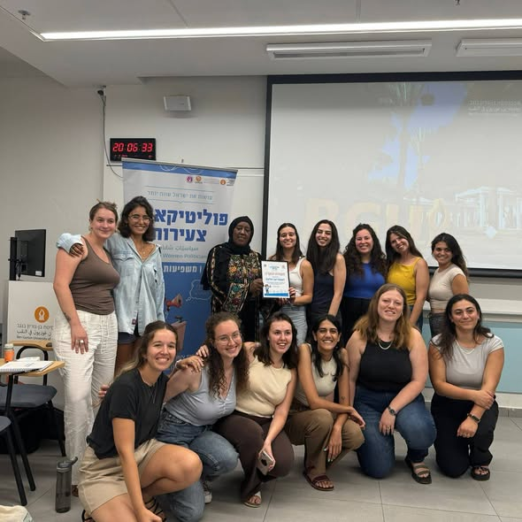
פעילה למען זכויות נשים במפגש עם פוליטיקאיות צעירות
אמל אבו אלקום פעילה למען זכויות נשים בחברה הבדואית.
לפוסט בפייסבוק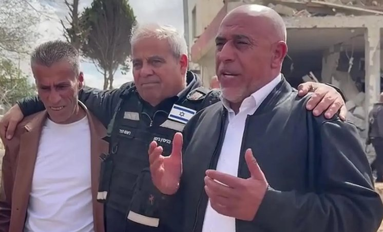
ראש מועצת ערערה בנגב מגיע לדימונה לאחר נפילת הטיל ומציע עזרה
ראש המועצה קרא לכל הצוותים הרפואיים בחברה הבדואית להגיע לסייע. בידיעה סרטון ובו ראש המועצה מדבר על שותפות ושכנות.
לקריאת הידיעההרופא הערבי בדואי שטיפל בפצועי 7.10 ובחר בפסיכיאטריה
על חווית העבודה בבית חולים סורוקה לרופא מהחברה הערבית בדואית, בעיקר לאחר ה-7.10.
לקריאה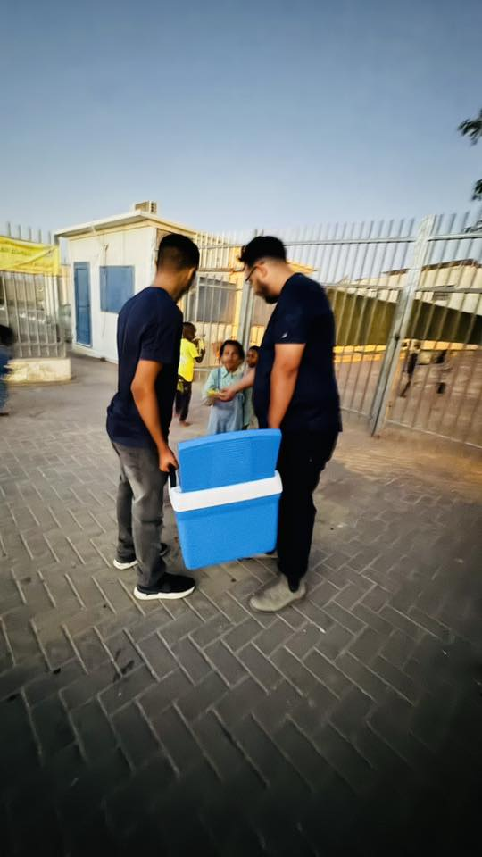
אדם אל אסד על ההזנחה ארוכת השנים של לקיה
עמדה מנומקת ומוסברת היטב באשר לתופעת הפשיעה בחברה הערבית, להזנחה הממשלתית ולשיח הפופוליסטי סביב משילות.
לקריאה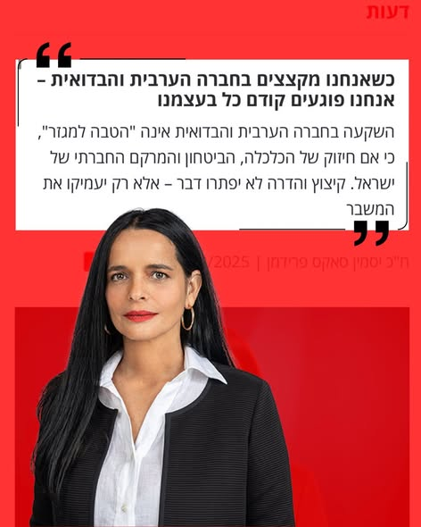
ההשקעה בחברה הערבית בדואית היא חיזוק הכלכלה, הביטחון ומרקם החיים בנגב
על הנגב כמרחב משותף שבו חיים יהודים וערבים בדואים ביחד. מדוע תכניות החומש לחברה הערבית מועילות לכלכלת ישראל.
לקריאה"קולות מדבר" – פודקאסט החברה הבדואית
פודקאסט עשיר בתכנים ובקולות מהחברה הערבית בדואית בנגב. מאפשר גם היכרות עם ההיסטוריה, האתגרים ויזמות חדשות.
להאזנה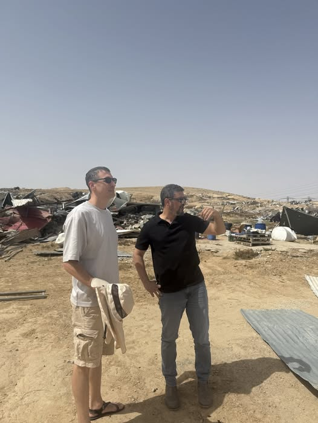
ביקור תומר אביטל (דמוקרטים) בנגב
לאחר ביקור בכפרים לא מוכרים, תומר אביטל מתייחס לקשר בין הזנחה והדרה לפשיעה ולזהות המורכבת של החברה הבדואית.
לקריאה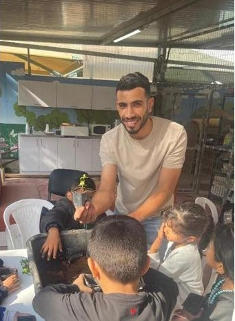
להיות צעיר בדואי – שיחה עם מאהר אבו כף
סיפור אישי על זהות מורכבת, לבטים ותקרות זכוכית.
לקריאה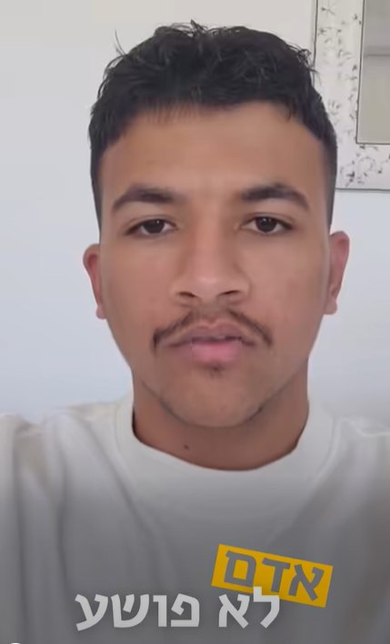
קמפיין "אחמד לא פושע" של צעירים ערבים בדואים
מנהיגים צעירים מספרים על עצמם, על עיסוקיהם ומצהירים שהם "לא פושעים" כדי לסתור את הסטיגמה.
לצפייה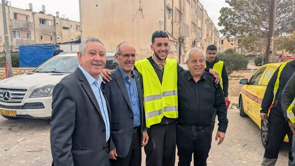
חניכי כוכבי המדבר מתנדבים בדימונה
חניכי כוכבי המדבר החליטו לקיים את הפעילות ההתנדבותית שלהם בדימונה לאחר נפילת הטיל. שכנות ועזרה הדדית.
לקריאה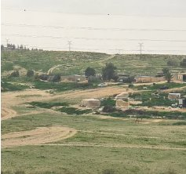
הכפר הלא מוכר שהצליח לשגשג: נטול פשיעה ונשירה מהלימודים
סיפור יוצא דופן על כפר לא מוכר משגשג ועל הקשר בין תעסוקה והשכלה להעדר פשיעה. חשוב גם כסיפור שובר סטריאוטיפים.
לקריאה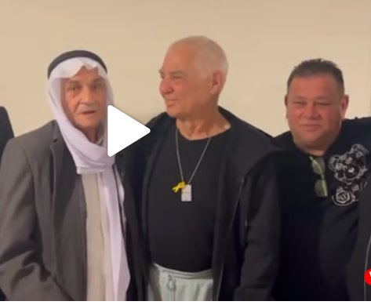
חברות ושותפות בין חקלאים: חאג' עטייה אלעבורה הגיע לחבק את גדי מוזס עם שובו מהשבי
שותפות חקלאית וחברות.
לקריאה וצפייהדבריו של ראש עיריית רהט טלאל אלקרנאווי בהפגנה נגד הפשיעה
ראש עיריית רהט מסביר שהבדואים אינם כולם פושעים – הם רופאים, עורכי דין, מורים וקבלנים שמפתחים ומצמיחים את הנגב. קריאה לשותפות. (דקה 52 בוידאו)
לצפייה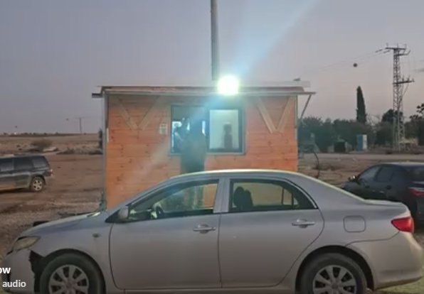
עגלת הקפה של פואד – בכביש מבאר שבע מזרחה
סרטון שזכה לאלפי צפיות על עגלת קפה מוצלחת ומצליחה.
לצפייה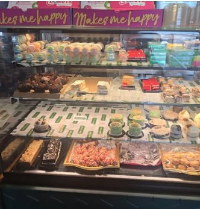
שגב שלום זה ממש לא רק ירי – ביקור עם סגן ראש המועצה
להכיר את הצד האחר של הישובים הבדואים: בתי הקפה, העסקים, האנשים.
לצפייה